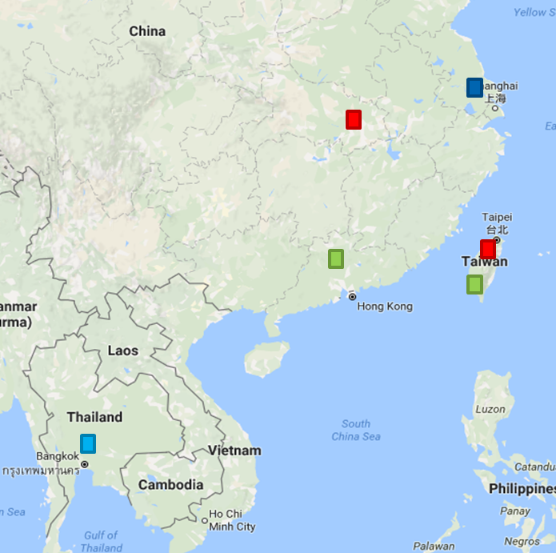

Microchip / MCU Platform
Greata supports Microchip-related product selection, supply coordination and technical communication for MCU and embedded control projects, helping customers move from evaluation to production with clearer execution.
Microcontroller and semiconductor solutions
Founded in 1998, Greata supports semiconductor and electronics manufacturing customers with Microchip-related products, MCU platforms, semiconductor applications, power management, fan and motor-control applications, backed by sales, FAE technical support and program coordination across Asia.
Company Profile
Greata started in Taiwan and expanded to Suzhou, Dongguan, Wuhan and Bangkok. Our organization brings together sales, technical, finance, warehouse and program teams to support customers from product selection and technical discussion to delivery planning and production ramp-up.
Products and Support
Greata focuses on Microchip-related products, MCU, analog, authentication, cryptography, power supply, power management, fan, motor and embedded-control applications, giving customers a clear FAE technical support window from design evaluation to production supply.
Greata supports Microchip-related product selection, supply coordination and technical communication for MCU and embedded control projects, helping customers move from evaluation to production with clearer execution.
For power supply, analog signal and conversion designs, we help review component options, replacement plans and supply timing so engineering and procurement teams can work from the same information.
We assist customers with security ICs, authentication devices and cryptography-related applications, connecting use cases, part selection and design validation into a more manageable workflow.
For fan, motor, drive and power-control applications, Greata coordinates discussions around control logic, efficiency, reliability and supply stability for long-running production programs.
Our cross-region program team aligns customer demand, factory feedback, schedule changes and production planning, keeping sales, technical and supply updates organized.
By linking sales, CSR, warehouse and finance workflows, Greata helps customers plan stock, shipments and after-sales support with fewer surprises during project ramp-up.
Greata works with customers on Microchip-related products, MCU platforms, embedded control and semiconductor applications, from product selection to production supply coordination.
For power management, power conversion and analog component needs, our team helps connect engineering review, product availability and commercial planning.
We support fan, motor and control applications with part selection, technical discussion, project scheduling and supply coordination for production programs.
Product Lines
Greata connects official product resources with local technical service, helping customers identify suitable products and support channels across Microchip, Fortior Technology, SiS, Princeton Technology, MCU, motor control, analog power, human-machine interface and customized IC applications.
Microchip focuses on embedded-control semiconductors, including MCUs, FPGAs, analog, power, connectivity, security and development ecosystems. Greata helps customers connect product resources, technical discussion and production supply planning.
Official WebsiteFortior Technology specializes in motor-drive control chips and control systems, with products such as MCU, ASIC, IPM, HVIC, sensor and power ICs for fan, appliance, power-tool, industrial-control and smart-device applications.
Official WebsiteSiS is a Taiwan IC design company focused on human-machine interface, sensing control, power management and mixed-signal applications for consumer electronics, industrial control, IoT and smart-device markets.
Official WebsiteFounded in 1986, Princeton Technology is a professional IC design company with products covering display drivers, multimedia audio, motor drivers, RF, codec, remote-control, MCU and customized IC solutions.
Official WebsiteRevenue and Advantages
Cross-functional teamwork and clear internal processes help us respond quickly to customer project needs.
Greata develops dedicated sales and technical contacts so customers know where to go for product and application discussions.
Long-term customer relationships give our team a practical understanding of electronics manufacturing and procurement cycles.
We adjust sales and supply strategies as market conditions change, supporting customers through demand and availability shifts.
Asia Service Network
Sales and FAE teams are positioned near key electronics manufacturing regions, supporting local communication, technical discussion and program progress.

9F-2, No.111, Sec.5, Hsin-Yi Road, Taipei, Taiwan
+886-2-23456969No.209, Tong Yuan Road, Lou Feng, Suzhou Industrial Park, Suzhou
86-512-625251251104 Pairoach Village Soi Krongkarn 5 Soi 1 Bangnatrad R., Bangna, Bangkok 10260
+66(0)2744-0904Contact
9F.-2, No.111, Sec. 5, Xinyi Rd., Xinyi Dist., Taipei City, Taiwan